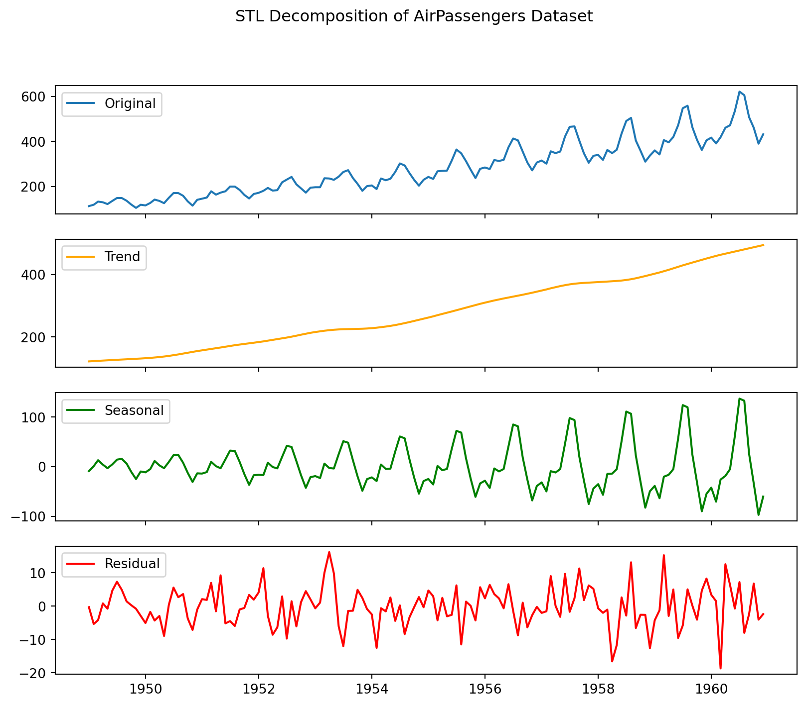
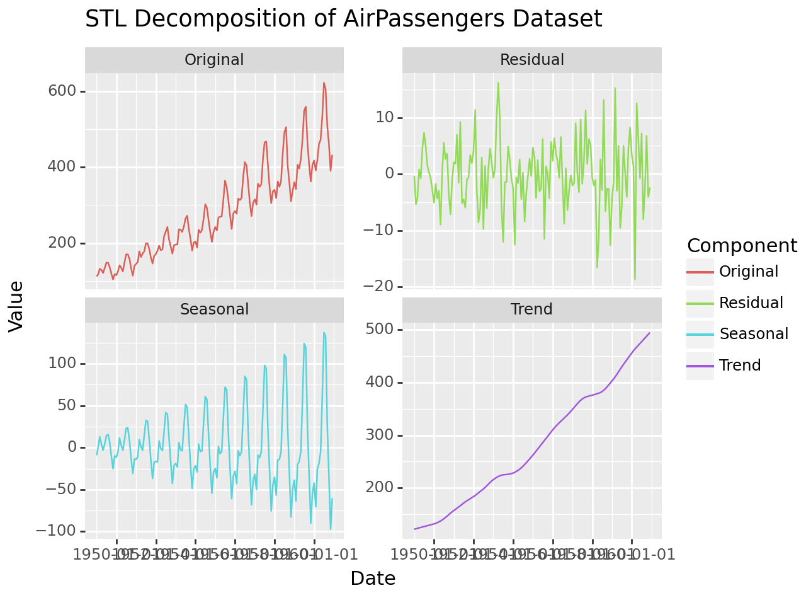
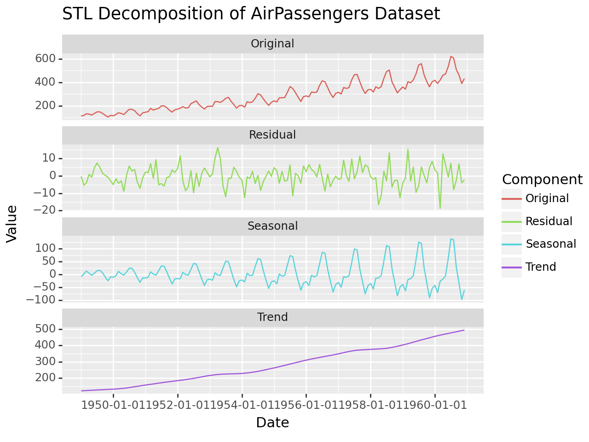

import numpy as npimport pandas as pdimport matplotlib.pyplot as pltfrom statsmodels.tsa.seasonal import STL# Load the AirPassengers datasetair_passengers = pd.read_csv('data/AirPassengers.csv')air_passengers['Month'] = pd.to_datetime(air_passengers['Month'])air_passengers.set_index('Month', inplace=True)# Perform STL decompositionstl = STL(air_passengers, seasonal=13) # The seasonal parameter is chosen based on the periodicity of your dataresult = stl.fit()result
<statsmodels.tsa.seasonal.DecomposeResult at 0x1b2ffd590a0>
4.1 Method 1: Plotting
# Plot the original time series, trend, seasonal, and remainder componentsfig, (ax1, ax2, ax3, ax4) = plt.subplots(4, 1, figsize=(10, 8), sharex=True)ax1.plot(air_passengers, label='Original')ax1.legend()ax2.plot(result.trend, label='Trend', color='orange')ax2.legend()ax3.plot(result.seasonal, label='Seasonal', color='green')ax3.legend()ax4.plot(result.resid, label='Residual', color='red')ax4.legend()plt.suptitle('STL Decomposition of AirPassengers Dataset')plt.show()

4.2 Method 2: Plotting using plotnine
from plotnine import ggplot, aes, geom_line, facet_wrap, ggtitle# Create a DataFrame for visualizationdf_visualization = pd.DataFrame({'Date': air_passengers.index,'Original': air_passengers['#Passengers'],'Trend': result.trend,'Seasonal': result.seasonal,'Residual': result.resid})df_visualization
Date
Original
Trend
Seasonal
Residual
Month
1949-01-01
1949-01-01
112
121.463327
-9.157113
-0.306215
1949-02-01
1949-02-01
118
122.392507
0.961357
-5.353864
1949-03-01
1949-03-01
132
123.284151
12.919571
-4.203722
1949-04-01
1949-04-01
129
124.139983
4.042554
0.817463
1949-05-01
1949-05-01
121
124.967180
-3.196646
-0.770534
...
...
...
...
...
...
1960-08-01
1960-08-01
606
481.142084
132.866128
-8.008212
1960-09-01
1960-09-01
508
484.574794
25.826563
-2.401357
1960-10-01
1960-10-01
461
487.984483
-33.766745
6.782262
1960-11-01
1960-11-01
390
491.372961
-97.319814
-4.053148
1960-12-01
1960-12-01
432
494.738728
-60.351183
-2.387545
144 rows × 5 columns
# Melt the DataFrame for easier plottingdf_melted = df_visualization.melt(id_vars='Date', var_name='Component', value_name='Value')df_melted
Date
Component
Value
0
1949-01-01
Original
112.000000
1
1949-02-01
Original
118.000000
2
1949-03-01
Original
132.000000
3
1949-04-01
Original
129.000000
4
1949-05-01
Original
121.000000
...
...
...
...
571
1960-08-01
Residual
-8.008212
572
1960-09-01
Residual
-2.401357
573
1960-10-01
Residual
6.782262
574
1960-11-01
Residual
-4.053148
575
1960-12-01
Residual
-2.387545
576 rows × 3 columns
# Plot using plotnineplot = ( ggplot(df_melted, aes(x='Date', y='Value', color='Component')) + geom_line() + facet_wrap('~Component', scales='free_y') + ggtitle('STL Decomposition of AirPassengers Dataset'))# Display the plotprint(plot)

# Plot using plotnineplot = ( ggplot(df_melted, aes(x='Date', y='Value', color='Component')) + geom_line() + facet_wrap('~Component', scales='free_y', ncol=1) + ggtitle('STL Decomposition of AirPassengers Dataset'))# Display the plotprint(plot)

Task: Take hourly series and perform STL decomposition.